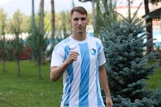
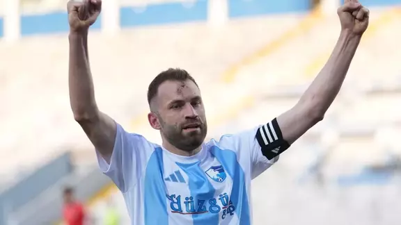

Erzurumspor FK
Erzurumspor FK, Türkiye 1. Lig'inde mücadele eden ve şehrin futbol tutkusunu yansıtan bir takımdır.
Takımın Tarihçesi
Erzurumspor FK, 2018 yılında kuruldu ve kısa sürede Erzurum'u profesyonel liglerde temsil etmeye başladı. Kazım Karabekir Stadyumu'nda oynayan takım, bölgesel futbolun önemli bir parçasıdır.
- Tam ad: Erzurumspor Futbol Kulübü
- Takma ad: Dadaşlar / Palandöken Kartalları
- Renkler: Mavi-Beyaz
- Kuruluş: 2005
- Stadyum: Kâzım Karabekir (21.374 kişi)
- Sahip: Erzurum Büyükşehir Belediyesi
- Başkan: Ahmet Dal
- Teknik Direktör: Hakan Kutlu
- Lig: 1. Lig
Başarıları
- 2010-2011: BAL 1. Grup’ta 16 galibiyetle 3. Lig’e yükseldi.
- 2015-2016: 3. Lig 1. Grup şampiyonu oldu, 2. Lig'e yükseldi.
- 2016-2017: 2. Lig Beyaz Grup’ta play-off şampiyonu olarak 1. Lig’e yükseldi.
- 2017-2018: 1. Lig play-off finalinde Gazişehir FK’yi yenerek Süper Lig’e çıktı.
- 2019-2020: 1. Lig’i 2. tamamlayarak yeniden Süper Lig’e yükseldi.
- 2020: Türkiye Kupası’nda Beşiktaş’ı eleyerek ilk kez çeyrek finale çıktı.
- 2020-21 sezonunda Süper Lig'de mücadele etti.
- 1. Lig Play-Off’ta yarı final oynadı.
- Türkiye Kupası'nda çeyrek finale kadar çıktı.
Takım Kadrosu
Eren Tozlu
Forvet – 13 golle en skorer oyuncu.

Tonio Teklic
Orta Saha – 9 asistle lider pasör.

Mustafa Yumlu
Defans – 8 golle dikkat çeken savunmacı.